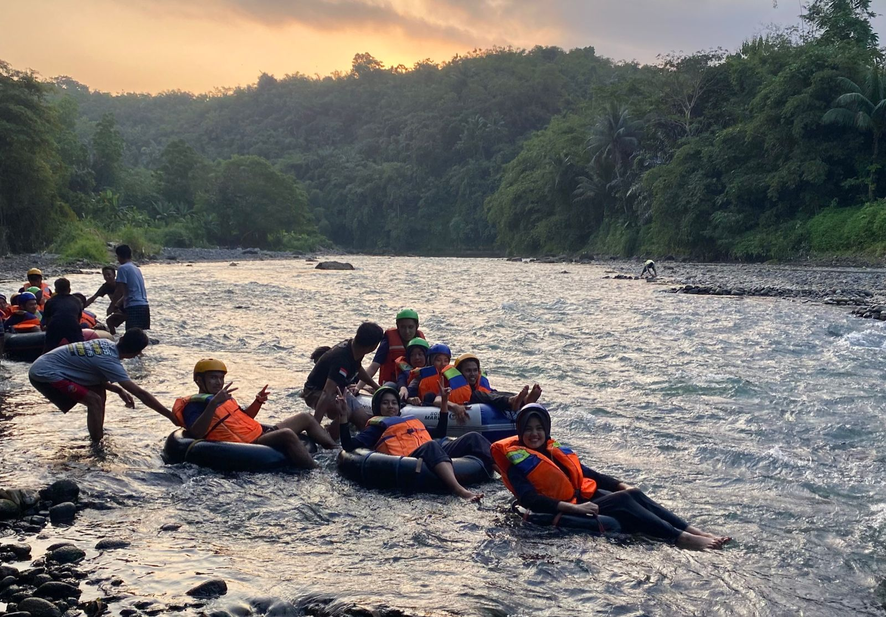
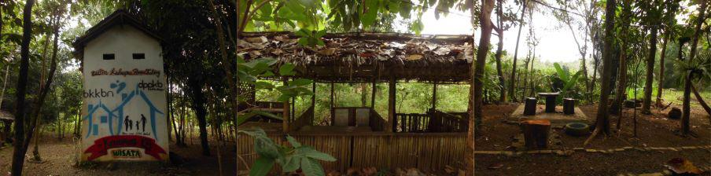

Banner Utama Wisata Ulin Ka Bapa

Tubing di Sungai Citanduy

Amenitas dan Infrastruktur di Wisata Ulin Kabapa

Amenitas dan Infrastruktur di Wisata Ulin Kabapa
Artikel
Wisata Ulin Ka Bapa
Oleh Alvin Silalahi | Tim KKN-PPM UGM Banjar Bestari
Destinasi wisata bernama “Wahana Ulin Kabapa” menawarkan pemandangan yang alami dan menenangkan serta pengalaman wahana yang tak terlupakan. Wahana Ulin Kabapa terletak di Dusuh Balokang Fatrol, Desa Jajawar, Kecamatan Banjar, Kota Banjar, Provinsi Jawa Barat. Wahana ini berdiri sejak tahun 2021 yang dikelola dan dikembangkan oleh kepemilikan pribadi yaitu Bapak Ado yang dibantu oleh pemuda dan warga sekitar tempat rekreasi tersebut. Wisata ini menawarkan kegiatan berupa arung jeram menelusuri Sungai Citanduy serta tempat komunal dan bersantai. Tempat ini dalam perjalanannya cukup sering menemui masalah, namun dengan potensi yang dimiliki menjadikan tempat ini menarik untuk dikaji dan dikembangkan.
Pada saat awal pembukaan destinasi wisata ini, berbagai infrastruktur penunjang dapat ditemukan seperti tempat duduk, saung, viewing bridge, dll. Tempat ini menawarkan kegiatan di Sungai Citanduy berupa rafting dan tubing dengan harga yang relatif murah dibandingkan dengan wahana sejenis yang tersedia di tempat lainnya. Pada masanya, tempat ini merupakan destinasi wisata yang cukup terkenal di Kota Banjar. Banyak kegiatan masyarakat yang diselenggarakan di tempat ini, seperti acara pernikahan, kegiatan outing kelompok instansi, maupun kegiatan lokal penduduk desa tersebut. Seiring dengan berjalannya berbagai kegiatan pada tempat ini memunculkan berbagai permasalahan baik dari segi infrastruktur, pengelolaan, serta branding.
Ulin Ka Bapa memberikan kesan rindang dan sejuk. Terdapat pula akses jalan menuju Sungai Citanduy meski cukup curam. Ulin Ka Bapa juga dilengkapi dengan saung-saung yang dapat dimanfaatkan oleh masyarakat publik untuk sekedar menikmati keadaan sekitar. Terkadang masyarakat setempat memanfaatkan saung ini untuk melakukan rapat atau sekedar nongkrong. Tempat ini juga terdapat gudang penyimpanan, fasilitas berupa sound system dan screen, dan panggung. Namun, kondisi eksisting fasilitas yang ada di Ulin Ka Bapa belum dilengkapi dengan fasilitas-fasilitas pendukung yang dapat dinikmati dan dimanfaatkan masyarakat selain melakukan arung jeram, seperti toilet, kamar mandi, serta fasilitas kuliner.
Sebagai bentuk publikasi, Wahana Ulin Kabapa memiliki sarana branding berupa akun instagram yang dikelola oleh karang taruna dusun. Akun tersebut memiliki beberapa post dan telah memiliki pengikut yang cukup. Namun, dalam pembuatan konten masih dalam bentuk yang cukup mentah sehingga kurang menarik untuk menjangkau pasar yang lebih besar. Pengelolaan tempat ini juga tidak memiliki struktur dan divisi yang terdefinisi dengan jelas serta pengurus yang sukarela sehingga tidak terdapat kontrak. Selain itu, Wisata Ulin Kabapa maupun dusun Balokang Fatrol belum memiliki ikon yang dapat dijadikan simbol untuk tempat tersebut. Hal yang paling mendekati dari ikon wisata ini adalah Desa Keluarga Berencana (KB).
Wahana Ulin Ka Bapa memiliki potensi yang baik. Tempat ini menawarkan atraksi utama berupa arung jeram dan tubing, yang didukung dan dilengkapi dengan fasilitas yang ada. Lokasinya yang dekat dengan sungai Citanduy, didukung dengan pepohonan yang rindang memberikan kesejukan bagi pengunjungnya. Selain itu, Ulin Ka Bapa memiliki lahan yang cukup luas untuk dimanfaatkan sebagai ruang komunal yang bisa digunakan oleh berbagai macam pihak, baik dari pihak pengunjung sebagai tempat sekedar bersantai maupun warga setempat dengan cara berjualan produk buatan mereka sendiri.
Dalam pengembangannya, wahana Ulin Ka Bapa dapat bergerak sebagai pariwisata yang berbasis masyarakat dengan menempatkan warga sebagai pelaku dan target pemberdayaan desa guna pemingkatan pariwisata. Dalam perencanaannya dapat dilakukan optimasi pada pemantapan amenitas, aktivasi ruang publik, dan aktivasi ruang komersil. Pemantapan amenitas dilakukan dengan menambahkan fasilitas pendukung, seperti kamar mandi dan mushalla. Aktivasi ruang publik dilakukan dengan perancangan kembali ruang terbuka hijau untuk kegiatan yang fleksible serta perancangan panggung utama. Aktivasi ruang komersil dilakukan dengan pembukaan area warung sebagai tempat berjualan UMKM desa atau warga sehingga memberikan aktivitas dan sesuatu yang dapat dibeli di tempat ini.
Wahana ini memiliki potensi sebagai destinasi yang terkenal di Kota Banjar, bahkan di Jawa Barat. Dengan tempatnya yang asri dan hijau yang terletak dekat dengan Sungai Citanduy menjadikan tempat ini cocok untuk bersantai bersama keluarga dan teman, maupun bermain arung jeram. Dalam operasionalnya terdapat permasalahan seperti pada segi infrastruktur, branding, dan pengelolaan sehingga diperlukan pengembangan lebih lanjut.